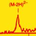

Laboratory for Medicinal Chemistry - education
We are involved in the teaching program of the Faculty of Pharmaceutical Sciences both at the undergraduate and graduate level. Here is a list of the classes that we teach:
organic chemistry
Basic organic chemistry course. Course topics are atom and molecule structure, functional groups, properties and reactions of organic molecules. [
syllabus part 1,
syllabus part 2]
medicinal chemistry
Main topics covered in these classes are neurotransmittors, hormones, neurohormones, nucleic acids and indirect acting substances.
[syllabus]
organic chemistry laboratory
Laboratory techniques such as chromatography, distillation, extraction and simple reactions are performed.
[
syllabus]
Pharmaceutical Biotechnology
The course gives an overview of key topics in biotechnology (e.g. DNA assembly, protein expression) and how those come together in the development of novel pharmaceuticals (e.g. regulation, development, manufacturing). The course is given in English and it has a strong focus on antibodies as biotherapeutics.
[
syllabus]
mass spectrometry

A basic course on organic mass spectrometry, instruments and bioanalytical applications. Lessons are given in english.
[
syllabus]
NMR spectroscopy and molecular modelling
Introduction to NMR spectroscopy and molecular modelling. Lessons are given in english. [
syllabus]
pharmaceutical excipients
Topics of this course include the origin, analysis and use of synthetic, semisynthetic and natural substances used as excipients in pharmaceutical formulations. [
syllabus]
laboratory automation

Automation of laboratory processes, instrumentation and computer interfacing. [
syllabus]
advanced biotherapeutics, pharmacogenomics and precision medicine
Therapeutic approaches based on organisms, cells or biomolecules such as proteins and nucleic acids. The role of pharmacogenomics in drug discovery and development.
Introduction to precision medicine (personalised medicine).
[
syllabus]